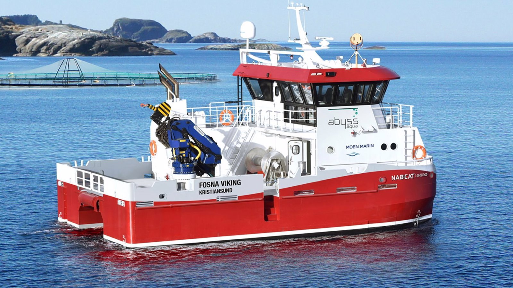

Norge
Om oss
Maritime tjenester for havbruk holder til i Norge.
Maritime tjenester for havbruk holder til i Norge og tar oppdrag innen service, notvask, dykking og avlusing.
Maritime tjenester for havbruk | Abyss Tjenester Service Notvask Dykking Avlusing Andre tjenester Fartøy Om Abyss Om oss Innsikt Karriere Bærekraft Samfunnsengasjement Fiskevelferd og biosikkerhet HMS og kvalitet Kontakt oss Karriere Ring vakttelefon Vakttelefon: +47 476 80 888 En allsidig og fleksibel maritim leverandør Abyss har landets mest fleksible flåte, og garanterer sikker og levedyktig drift for oppdrettere langs hele kysten.
Service Notvask Dykking Avlusing Bygget for krevende operasjoner Les mer om oss Vi har lært at operasjoner ute på havet ikke bare handler om fartøy og utstyr.
Det handler om å forstå oppdraget, velge riktig kapasitet og gjennomføre arbeidet med kontroll, erfaring og ansvar for både folk, fisk og anlegg.
«Se hva som er endret og hva som gjenstår»

Vil du vite mer?
Vi svarer på det du lurer på, uten bindende avtale.
Ta kontakt